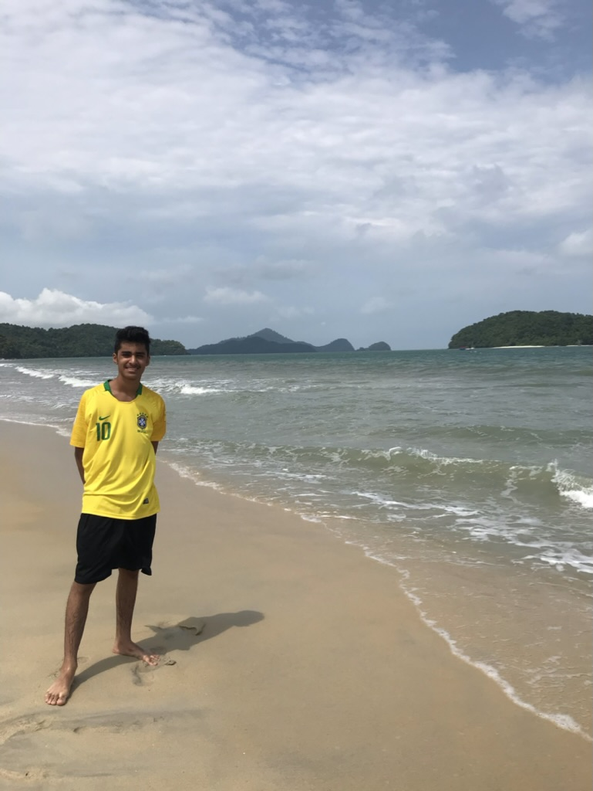

Abdulrahman Baflah
Hello, and welcome to my about me page! My name is Abdulrahman Baflah, and I am a computer science student with a passion for technology and a dream of landing a job in the industry. I earned a KGSP scholarship which is one of the most prestigious scholarships in the kingdom of Saudi Arabia. This portfolio is made with the purpose of enhancing my professional image and in hopes to get whoever visits my website to contact me about an offer or business plans.
